Лабораторная работа №4
Обзор
В рамках этой лабораторной работы был рассмотрен Vue и JS, как инструменты для создания интерфейсов веб-приложения из 3 лабораторной работы. Был создан интерфейс для управления страховыми данными. Интерфейс включает страницы для просмотра, добавления, редактирования и удаления данных из базы данных. Также был создан простой дизайн проекта.
Ход работы
Ход работы был следующим:
- Создание проекта Vue
- Создание компонентов для отображения данных
- Создание компонентов для добавления, редактирования и удаления данных
- Создание маршрутизации
- Создание дизайна
Директория проекта
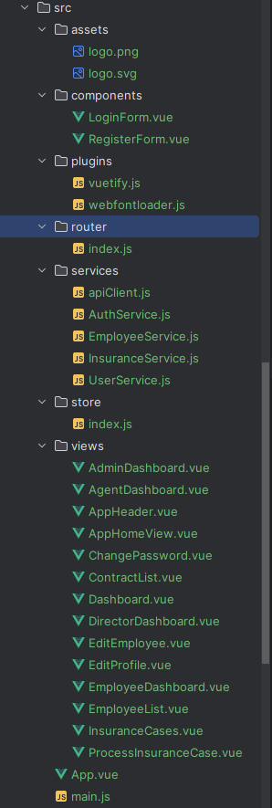
Скрины полученных результатов
- Страничка Авторизации (Логин):
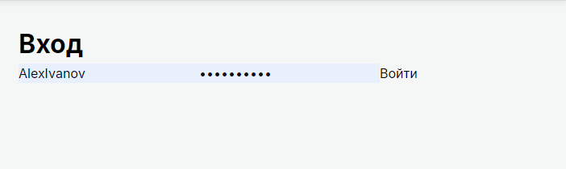
Она реализована за счет обычного VUE-компонента, который обращается к API для авторизации пользователя, и проверяет в бд наличие пользователя с такими данными. Далее в случае успешной авторизации, пользователь перенаправляется на главную страницу, а его токен сохраняется при помощи скрипта в localStorage. В случае неудачной авторизации, пользователь получает сообщение об ошибке. вот так выглядит код авторизации:
async login(username, password) {
try {
const response = await axios.post(`${LOGIN_URL}token/`, {
username,
password,
});
this.setTokens(response.data); // Сохраняем токены
return response.data;
} catch (error) {
throw error;
}
},
Получаем токен и сохраняем его в хранилище и дальше при каждом запросе от пользователя, мы будем использовать этот токен для авторизации. При помощи следующего скрипта:
apiClient.interceptors.request.use(
async (config) => {
let token = localStorage.getItem('token');
const refreshToken = localStorage.getItem('refreshToken');
if (!token && refreshToken) {
try {
const response = await AuthService.refreshToken();
token = response.access;
} catch (error) {
}
}
if (token) {
config.headers.Authorization = `Bearer ${token}`;
}
return config;
},
(error) => Promise.reject(error)
);
Если объяснять, то простыми словами это выглядит так:
- Создание клиента: axios.create создает экземпляр axios с базовым URL и заголовками.
- Перехватчик запросов: Перед каждым запросом добавляется токен из localStorage. Если токен отсутствует, но есть refreshToken, он обновляется.
-
Перехватчик ответов: Если ответ имеет статус 401 (неавторизован), токен обновляется и запрос повторяется.
-
Страничка Авторизации (Регистрация):
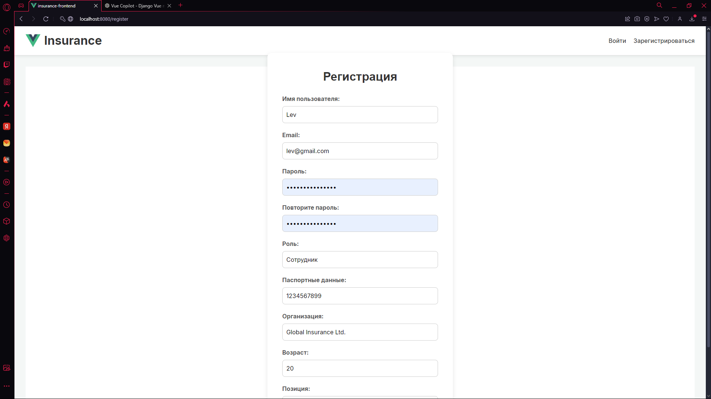
-
Главная страничка с данными:
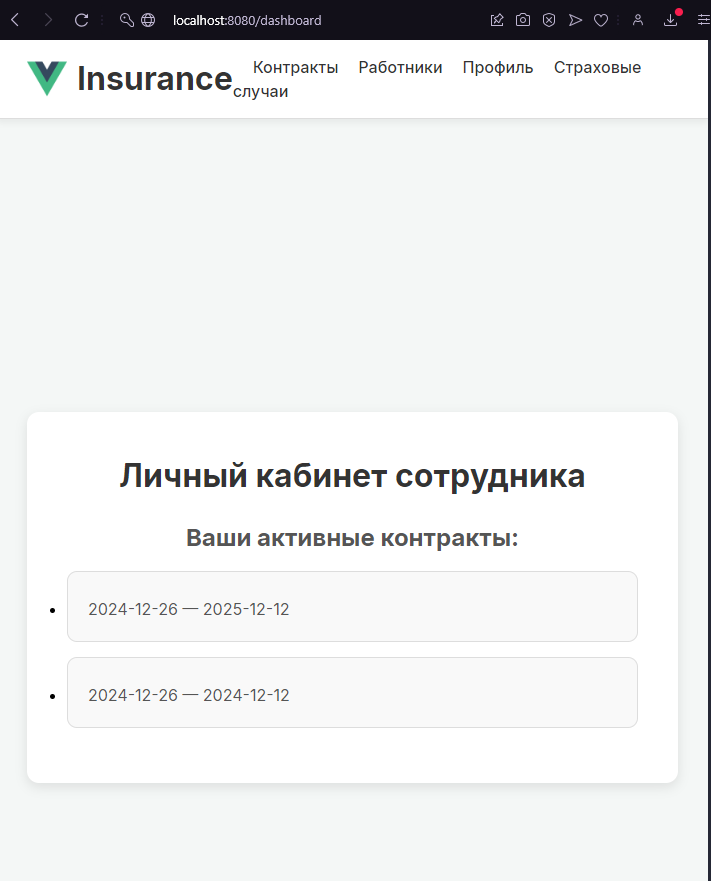
-
Страница всех сотрудников моей компании:
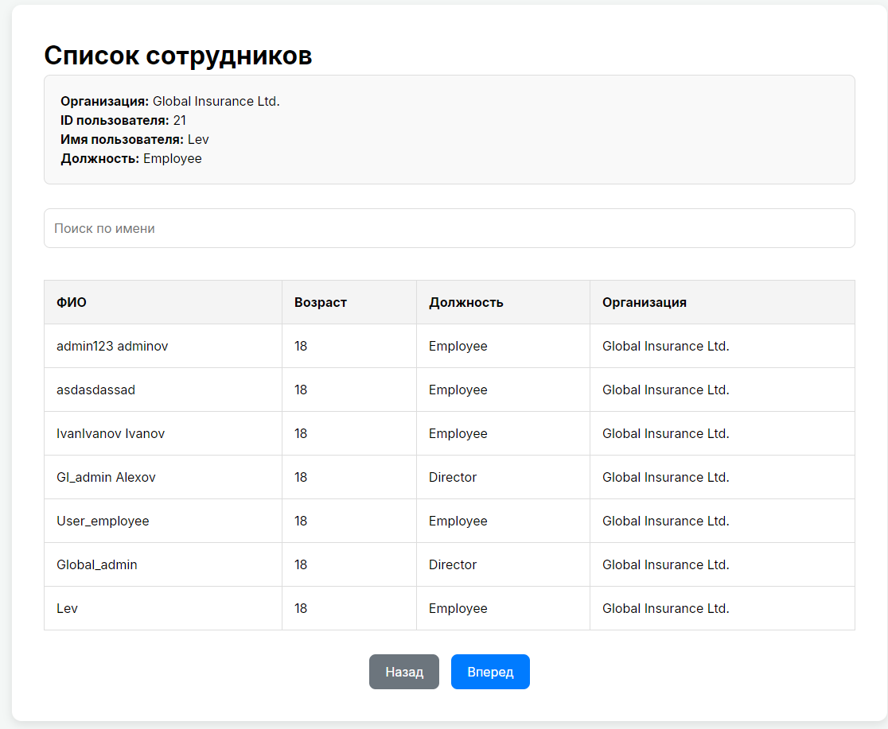
Тут можно увидеть всех сотрудников компании, их должности, возраст и фио. также тут настроен поиск и пагинация, чтобы удобнее было искать нужного сотрудника: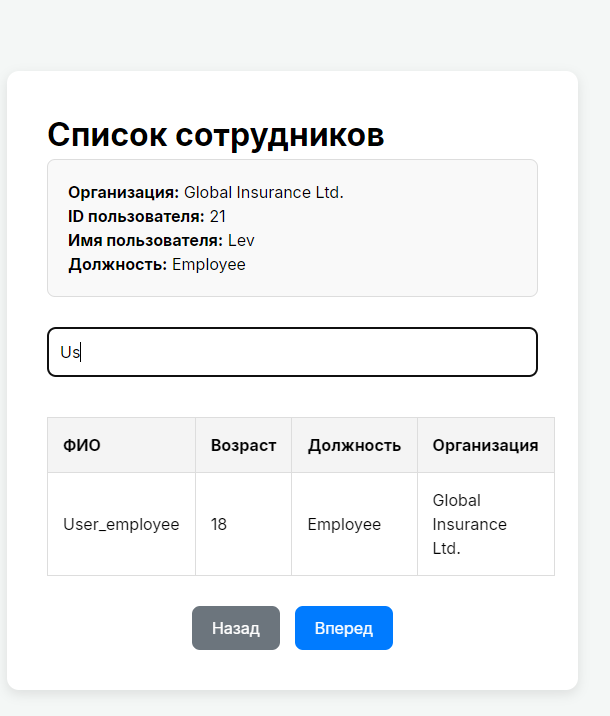
-
Страница контрактов (договоров) страхования:
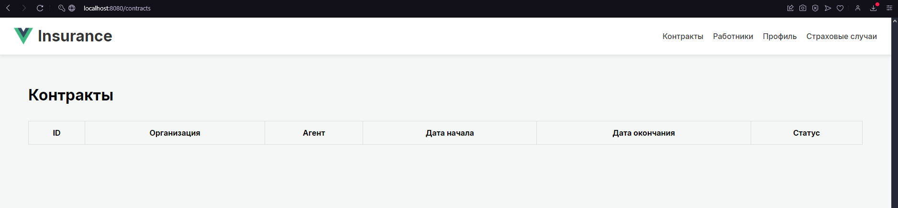
В силу того, что данный пользователь пока что не был зарегистрирован ни в одном договоре страхования табличка пустая. -
Страница личного профиля сотрудника:
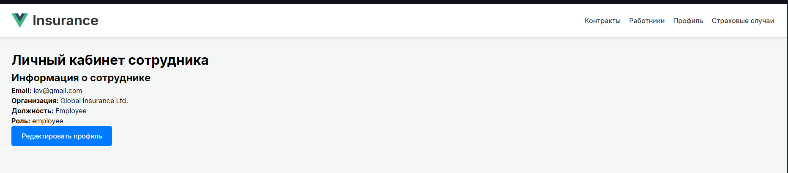
Тут также доступно редактирование данных: можно изменить имя пользователя, почту, пароль, паспортные данные и контактную информацию.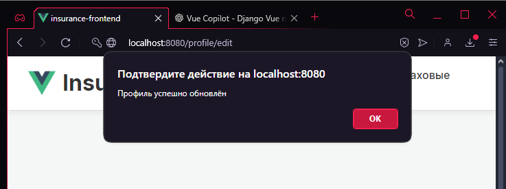
- если все успешно, то получаем сообщение об успешном изменении данных. -
Авторизовавшись под Директором компании, мы можем увидеть все договора страхования, которые были заключены в нашей компании, а также их удалить либо создать новый договор, но изменение не предполагается:
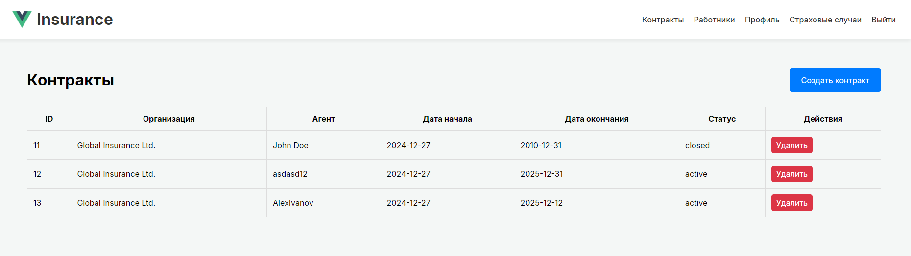
-
Также директор имеет возможность редактировать всех сотрудников компании, а также их удалять:
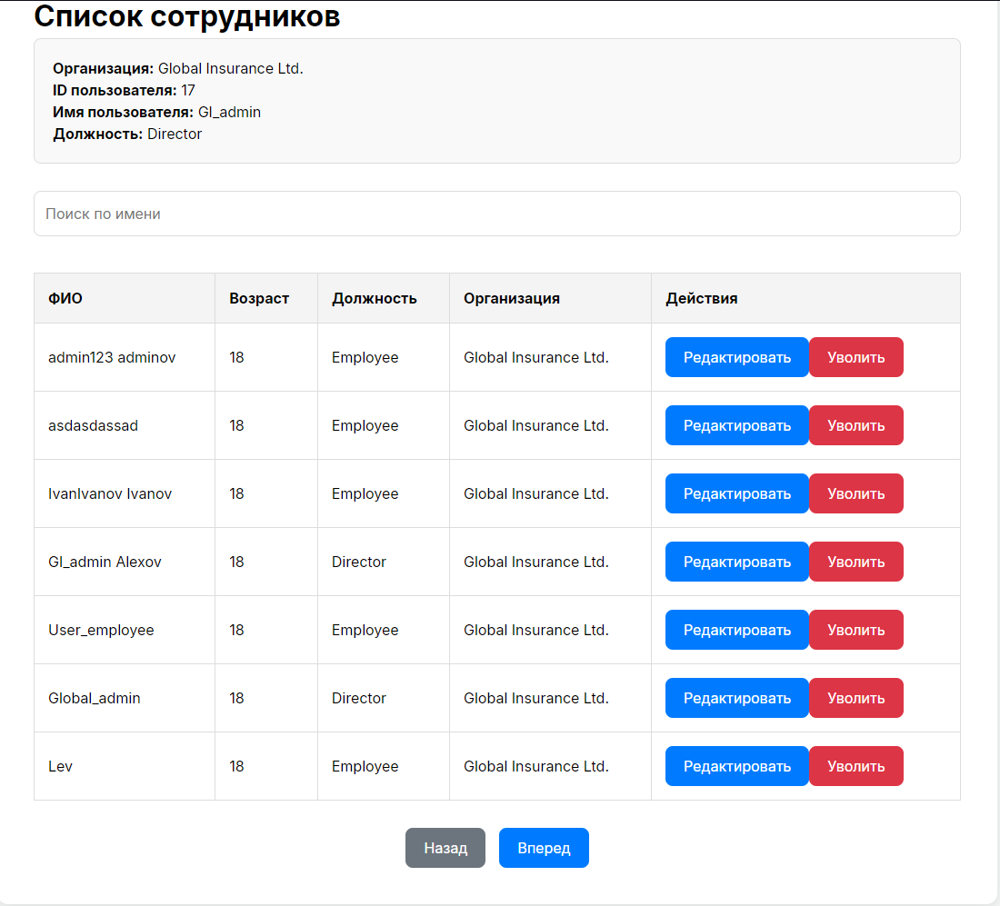
-
Страница страховых случаев:
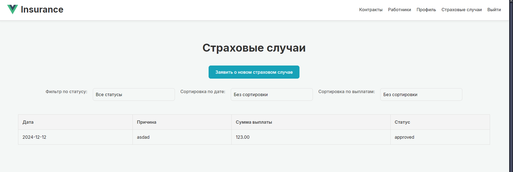
Тут можно увидеть все страховые случаи, которые произошли в компании, их дату, описание и статус, также настроена фильтрация: по статусу, дате и сортировка по выплатам.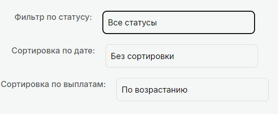
-
Войдем под сотрудником:
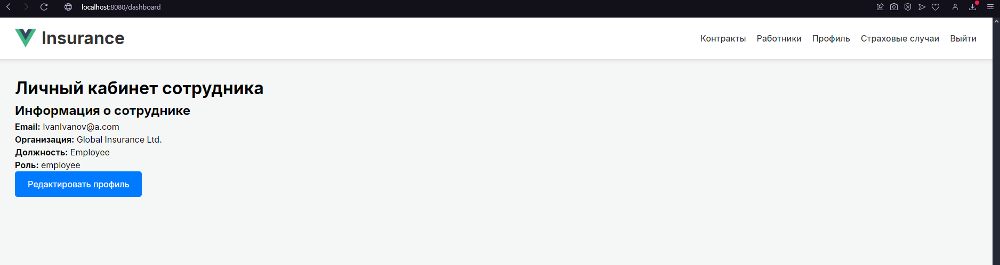
- ЛК Сотрудника - А теперь зайдем под агентом:
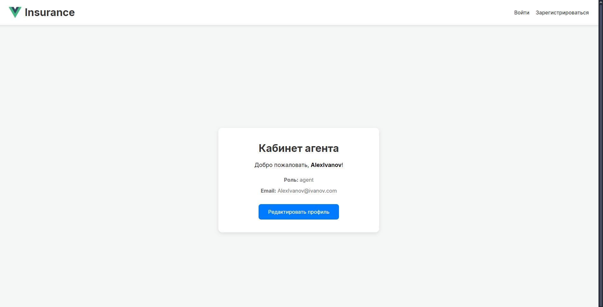
- ЛК Агента Меню для агента и сотрудника отличается, также их возможности.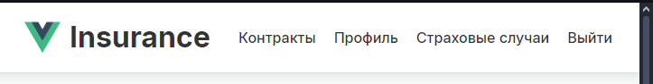
- меню агента
<template>
<div class="agent-dashboard">
<div class="profile-card">
<h1>Кабинет агента</h1>
<p class="welcome">Добро пожаловать, <strong>{{ user.username }}</strong>!</p>
<div class="profile-info">
<p><strong>Роль:</strong> {{ user.role || 'Агент' }}</p>
<p><strong>Email:</strong> {{ user.email || 'Не указан' }}</p>
</div>
<button @click="$router.push('/profile/edit')" class="primary-btn">
Редактировать профиль
</button>
</div>
</div>
</template>
Распределение по типу пользователя происходит в файле Dashboard.vue, где в зависимости от роли пользователя, подгружается его личный кабинет, обработка происходит через:
if (this.role === 'agent') {
this.dashboardComponent = AgentDashboard;
}
else if (this.role === 'employee') {
if (this.isStaff) {
this.dashboardComponent = DirectorDashboard; // Director как is_staff
} else {
this.dashboardComponent = EmployeeDashboard;
}
}
else if (this.role === 'admin') {
this.dashboardComponent = AdminDashboard;
}